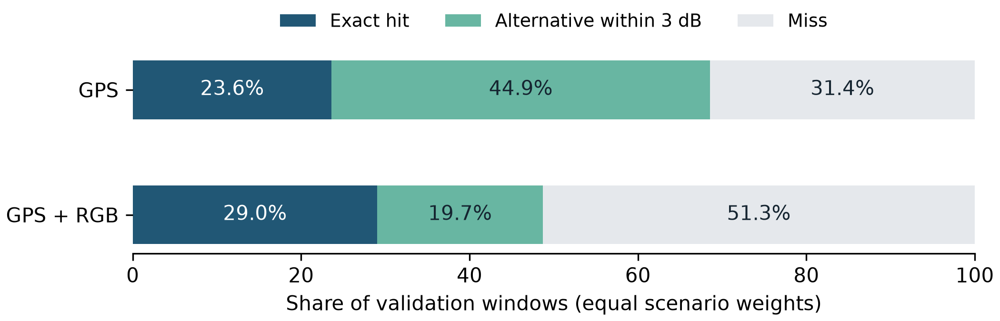

Does camera input improve the power of a five-beam shortlist? A paired study of vehicle-to-vehicle beam forecasting
Abstract
A vehicle that probes five predicted beams can recover a strong link even when its shortlist omits the single strongest beam. We measured how often front and rear cameras improve that opportunity beyond GPS in DeepSense-V2V Scenarios 36–39. On 16,643 trajectory-blocked validation windows, we compared GPS and GPS-plus-camera predictions at a median forecast horizon of 0.500 s. We paired predictions by window and initialization under both pooled training and leave-one-scenario-out training. For a full-codebook shifted-window model, cameras changed top-five exact-beam accuracy on excluded scenarios by +5.42 percentage points (95% paired block interval −2.86 to +9.98). Yet the probability of including a beam within 3 dB of the strongest fell by 19.85 points (interval −26.30 to −11.26). GPS alone frequently selected useful alternatives when it missed the strongest beam. A separate geometry-constrained model showed little incremental camera benefit at shortlist width 40. With a width of 20, candidate exclusion accounted for 84.7% of that model’s severe power misses. These development results identify two measurable sources of performance variation: which alternatives a ranking preserves and which alternatives its candidate generator makes available.
1. Introduction
In vehicle-to-vehicle (V2V) millimeter-wave communication, both ends of the link move. A predictor can use recent positions and images to nominate beams for measurement before the next link decision. The practical value of a shortlist depends on the power of its strongest member. Two algorithms can therefore differ in exact-beam accuracy and still offer similar power, or change rank when evaluated on power.
We ask how the incremental contribution of images changes when an entire driving scenario is excluded from training. We compare two model families with their own GPS controls and a fold-specific analytic geometry baseline. We examine the primary split contrast first. We then separate successful five-beam predictions into exact hits and alternative-beam successes. For the model that restricts its search to geometry candidates, a power-profile oracle separates candidate exclusion from mistakes within the shortlist. This combination yields an empirical account of failure at a fixed beam budget.
2. Related work
The DeepSense-V2V platform provides synchronized vehicle sensing and measured beam powers. The 2023 challenge already supplied GPS and two camera views for V2V forecasting, and the organizers adopted average power loss for scoring. Received power and multi-camera forecasting are therefore established elements of the problem. The released challenge baseline extrapolates vehicle positions and maps the relative direction to a beam. Our geometry control additionally fits an index offset within each training fold. Dataset paper · Challenge baseline
Fabiani et al. combine GPS and front/rear camera streams with EfficientNet-B3 and shifted-window attention for 500-ms prediction. Their linear GPS comparator motivates the use of a matched learned GPS control here. Mollah, Wang and Fang also compare fused and unimodal predictions across four V2V scenarios. Their within-scenario partitions, 64-beam task and power aggregation differ from our blocked, four-array experiment. Arnold et al. study multimodal beam prediction under distribution shift, establishing environment generalization as an existing research question. Our comparison measures the change in camera contribution on identical V2V validation windows and traces the resulting power outcomes to specific categories of beam selection. Differences in tasks and evaluation protocols preclude a numerical leaderboard comparison. Fabiani et al. · Mollah et al. · Analysis of Multi-Modal Beam Prediction under Distribution Shift
3. Data and evaluation
Each example uses five historical observations at row offsets −8, −6, −4, −2 and 0. The target at offset +5 contains power measurements for four arrays of 64 beams. The observed validation horizon ranged from 0.485 to 0.513 s. Predictors used historical GPS and, in the visual arms, the receiver’s front and rear views. Target power supplied supervision or evaluation. The GPS features encoded relative position, distance, bearing, displacement, displacement magnitude and positioning quality.
The pooled development partition contained 54,604 training windows. Scenarios 36, 37, 38 and 39 contributed 5,236, 4,862, 3,366 and 3,179 validation windows respectively. Train and validation partitions shared zero sequence identifiers, recording blocks, input/target raw rows or input image paths within each scenario. For each excluded-scenario fit we also removed that scenario from checkpoint selection and preprocessing fits. Pooled and transfer evaluation used the same validation window IDs. Pooled validation includes checkpoint-selection data and therefore measures a different generalization setting from excluded-scenario validation.
For each window let A denote the five highest-ranked beams, P(b) the measured power in dB for beam b, and L(A) = max_b P(b) − max_{b in A} P(b). A power success satisfies L(A) ≤ 3 dB. An exact hit includes the labeled strongest beam. We verified that the label was the unique measured maximum on every validation window. Power successes thus split into exact hits and alternative-beam successes, where the labeled beam is absent. Power loss assumes the best of the five can be identified after probing.
We averaged paired window-level differences across seeds 42, 7 and 13, then within each scenario, giving the four scenarios equal weight. The primary contrast subtracts the transfer camera gain from the pooled camera gain. We computed 95% percentile intervals from 4,000 paired resamples of recording blocks within scenario. These intervals condition on the observed scenarios and trained checkpoints. Each scenario contributed only two or three validation blocks.
4. Models
Geometry. Historical GPS gives an extrapolated relative direction. For each fold, we fitted the circular beam-index offset on training data and selected between two angular conventions on included-scenario validation. The resulting 256-beam ordering supplies both a reference prediction and the candidate sets for reranking.
Geometry-constrained reranker. The learned scorer ranks the highest 20 or 40 geometry candidates using GPS history, geometry descriptors and optionally time-averaged features from a fixed ResNet-18 image encoder. Each camera view was resized to 192 pixels per side before the two views were joined. Each RGB comparison used a GPS scorer with the same candidate budget. To diagnose exclusion, we measured the best power among all eligible candidates before restricting the ranking to five.
Full-codebook model. Our adaptation of Fabiani et al. used fixed ImageNet EfficientNet-B3 features from two depths, pooled to a 2 × 2 grid per 224-pixel camera view. Five observations formed the time axis. Eight visual tokens and one GPS token formed the other axis. Eight shifted-window blocks with four heads produced a ranking over 256 beams. The matched GPS arm zeroed both visual contributions. Freezing the encoder and pooling spatial features depart from the published feature feedback and fusion grid. We trained both arms for 12 epochs using cross-entropy and AdamW, batch size 96, initial learning rate 0.0004 and cosine decay. We selected checkpoints by macro top-five success within 3 dB. Two arms, five training partitions and three seeds yielded 30 fits. We froze the plan before examining this comparison’s outputs. Full protocol
5. Results
Primary split comparison. For the full-codebook model, the camera contribution to power success was −21.25 percentage points in pooled validation and −19.85 points in transfer. The pooled-minus-transfer contrast was −1.39 points (95% interval −13.01 to +8.49). For the regularized 20-candidate model, the corresponding camera gains were +0.431 and −0.286 points, with a contrast of +0.717 (−0.105 to +1.208). Omitting Scenario 39 reduced the latter contrast to +0.040. Neither block interval resolved a consistent direction of change between training settings. Scenario-level figure
Which successes changed? On excluded scenarios, the full-codebook GPS arm achieved 23.61% exact hits and a further 44.95% successes through alternative beams. With RGB those shares were 29.04% and 19.67%. In a post hoc paired analysis, the alternative-beam success difference was −25.28 percentage points (95% block interval −30.64 to −15.86). The differences for Scenarios 36 through 39 were −42.29, −7.56, −25.91 and −25.35 points, respectively. These percentages use all validation windows as the denominator. The exact-hit point estimate increased, with an interval spanning zero. The loss of alternative-beam successes was larger. Overall power success fell from 68.56% to 48.71%. Analytic geometry achieved 78.04%. Compared with matched GPS, RGB reduced mean top-one loss by 4.08 dB while increasing mean best-of-five loss by 5.31 dB. Reversing the tie-breaking order of equal-valued beam scores gave a transfer power-success difference of −19.75 points, close to the primary −19.85-point estimate. This distinction between first-ranked and best-of-five power matters for systems that can probe several proposed directions.

Figure 1. Outcomes on excluded-scenario validation windows, averaged over three seeds and weighted equally across scenarios. Each window falls into exactly one category. A miss means that all five selected beams were more than 3 dB below the strongest measured beam.
Where did the geometry-constrained model fail? At width 20, the model incurred more than 10 dB of loss on 16.80% of transfer windows. On 14.23% of all windows every candidate already exceeded that loss. Candidate exclusion therefore accounted for 84.7% of severe misses under equal scenario weighting. Widening the candidate set to 40 changed visual-model success by +0.329 points (−0.106 to +0.576). At width 40 the visual gain over matched GPS was +0.011 points (−0.007 to +0.037). Extra candidates can reduce the oracle penalty, but the measured benefit also depends on their learned ranks.
6. Discussion and limitations
The alternative-beam decomposition identifies an observable change in shortlist composition. It does not identify why the network made that change. Cross-entropy rewards the labeled maximum, while several neighboring or reflected beams may deliver adequate power. Establishing that the objective caused the observed pattern would require a controlled intervention using the same architecture and optimization budget. Likewise, the constrained-model oracle quantifies a ceiling for a particular candidate set. It cannot predict the gain from expanding that set.
Four repeatedly examined scenarios support a development study. Overlapping windows, few independent recording blocks and selection of earlier model variants limit inference to new routes. The shifted-window experiment tests a documented architectural adaptation. Its performance should not be attributed to the original authors’ implementation. We used the distributed row-to-image association; per-scenario differences between image filename clocks and CSV timestamps leave physical camera timing uncertain. No measurements of beam-switching latency, probing overhead or deployed throughput were collected. Calibration and locked test partitions were reserved under the original protocol. Timing provenance
7. Conclusion
On these four driving scenarios, a five-beam shortlist could improve its exact-hit point estimate while losing many windows in which an alternative beam would have delivered adequate power. A geometry-constrained scorer faced a different limitation: most of its severe misses were already unavoidable within its eligible candidates. Reporting matched GPS controls, alternative-beam success and candidate-set ceilings makes these failure modes distinguishable. The transfer comparisons leave the benefit of adding cameras to new routes unresolved.
Data and reproducibility
Raw data are available through DeepSense-V2V. The local development evidence includes paired scenario contrasts, a validation ranking audit, the shortlist oracle report and the frozen model protocol. Source predictions carry window identifiers for pairing. These repository-relative links refer to research artifacts in this working copy. Dataset · Paired contrasts · Ranking audit · Shortlist oracle · Split analysis